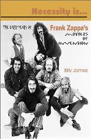
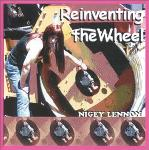

Заппа'zУх!Ой!
русский более или менее регулярный бюллетень для поклонников американского композитора
Frank'а Vincent'а Zappa'ы
Выпуск.32 (10 июня 2001)
Вокруг да около
У хорошего, правильного фанат ФЗ должен быть медвежий обмен веществ. Послушал EIHN и залег в берлогу года на два, на три, пока семейный будильник нашего кумира не натикает Trancefusion или Dance Me This.
Вот и Vaultmeister ZFT, который по-нашему, московскому, Зав. Сундуком, Joe Travers всем беспокойным недавно в который раз прямо и честно рекомендовал кровь охлаждать, мох есть и грызть орешки.
EIHE: Are there any new releases scheduled for this year?
JT: No.
Ну, просто беда! Так ведь, действительно, на месте пересемывая в бесконечном ожидании, и станешь, если не топтыгиным, то косолапым точно.

Вот, например, Мамки первого призыва, преодолели наконец-то классовую пролетарскую ненависть и рассказали мужчине Billy James'у, он же, насекомый-трудармеец, музыкант Ant-Bee, свои истории о жизни под пятой тирана и диктатора по имени Фрэнк Заппа.
Billy James. Necessity Is... The Yearly Years Of Frank Zappa & The Mothers Of Invention. SAF Publishing, London, 2001.
Истории, надо заметить, симпатичные, потому, что кровопийца и эксплуататор этим лабухам достался замечательный во всех отношениях. Чего они, собственно говоря, и не скрывают. Вздыхают, морщат носы, бормочут, bittersweet, bittersweet, а глазки все равно зажигаются, и старческие щеки наливаются румянцем.
Действительно, сколько в Америке простых людей родившихся в конце тридцатых, в начале сороковых? С младых ногтей учившихся играть на разных музыкальных инструментах, потом служивших в армии, водивших грузовики, на стройке доски тюкавших топориком, разным чувихам делавших детей, хлебавших пиво регулярно в придорожном баре? Да, миллионы! А с гением посчастливилось встретиться, жить и работать, от силы дюжине из них.
Don Preston, Bunk Gardner, Jimmy Carl Black, Roy Estrada, Buzz Gardner, Motorhead Sherwood и Ray Collins - список пусть и не полный, но впечатляющий. Кстати, за исключением братьев Гарднеров, как раз все те, кто как ни силился, а музыку с листа читать так и не выучился. Каждый когда-то, что-то Billy James'у рассказал, тот выбрал время, разрезал на кусочки интервью, сложил в хронологической последовательности, подклеил там и сям газетно-журнальные вырезки с воспоминаниями тех, кого не смог сам лично расспросить и получился прелестный бабушкин лоскутный коврик. Картинки быта дивной эпохи, смешные милые детали, подробности, обиды и радости в ценах неповторимых шестидесятых.
Славное чтиво. Не столько даже может быть о Фрэнке, сколько о времени, когда все думали, что он такой же парень из деревни, только еще умеет музыку писать.
Но, впрочем, у тех, кто знаний набирался не в пивной, и каталажке, а, например, в консерватории, дыханье перехватывало сразу, в первом такте. И благодать с благоговеньем тотчас же нисходили сладкой парочкой. За прозорливость этим людям слово. Ruth Underwood, стр.107
| I went to college for seven years and did everything by the books until I met Frank. His Absolutely Free show at the Garrick Theater changed my life. I no longer wanted to be a timpanist at the New York Philarmonic, or a virtuoso marimba soloist. All I ever wanted from that point on was to play Frank's music. One night my brother and I went to the Village Gate to hear Miles Davis. We were standing around waiting for show time and Frank was just walking down Bleecker Street. This was before bodyguards - he was just a guy on his way to work. My brother accosted him and said, 'You should hear my sister play! She's a great marimbist!' I was totally embarrassed. Frank turned to me and said, 'Fine. Bring your marimba backstage and we'll check ya out.' The next thing I knew I was recirding Uncle Meat at Apostolic Studios on East 10th Street. I was really active with him in the '70s. It was greatest experience of my life and the most difficult experiеnce of my life. It was educational, and enriching, and also backbreaking, grueling, sometimes lonely, terrifying - it was fucking unbelieveble." | До встречи с Фрэнком я уже отучилась в колледже семь лет и все учебники знала наизусть. Его шоу Absolutely Free в Garrick Theater изменило мою жизнь. Мечты о месте перкуссиониста в Нью-Йоркском Филармоническом Оркестре или карьере виртуоза маримбы улетучились в один миг. С этого дня я хотел только одного - играть музыку Фрэнка. Как-то вечером мы с моим братом отправились в Village Gate, чтобы послушать Майлса Дэвиса. Мы стояли у входа, ожидая начала выступления, и вдруг неожиданного увидели Фрэнка, идущего по Bleecker Street. Это было задолго до появления у него телохранителей - просто обыкновенный человеком шел на обыкновенную работу. Мой брат поздоровался с ним и сказал: "Вы должны послушать, как играет моя сестра. Она выдающийся маримбист". Я готова была умереть от смущения на месте. Фрэнк же повернулся ко мне и предложил: "Отлично. Берите свою маримбу и приходите на репетицию там вас и проверим". В общем, в одно мгновение ока я оказалась в Apostolic Studios на East 10th Street среди тех, кто записывал альбом Uncle Meat. Я очень много работала с Фрэнком в семидесятых. Эта была прекраснейшая и в то же время наитруднейшая пора моей жизни. Расширившая горизонты, обогатившая, и одновременно с этим напряженная, изнурительная, часто одинокая, даже ужасавшая - но, черт побери, неповторимая!" |

И главное верный. Это я слышал от очень многих людей, общавшихся с маэстро в разное время. Попала в точку. Угадала.
В текущем 2001 неутомимая Найджи, выступает сама по себе. Кстати, она автор ни одной только Being Frank, а еще полдесятка книг, в том числе первоклассной монографии о юности Марк Твена The Sagebrush Bohemian. Теперь Ms. Lennon еще и композитор, играющий на гитаре. В начале этого года в Нью-Йорке издан ее компакт Reinventing The Wheel. Долго, долго готовилась и вот наконец дала стране угля.
Прямо скажем, лучше бы новую книжку написала. Но, как говорится каждый творческий человек имеет право искать, терять, находить и не сдаваться. Тем более, что через эти поиски собственного я, нам поклонникам другого композитора, игравшего на гитаре, все равно радость. Покольку три песенки из шестнадцати на этой пластинке (и среди них Any Way The Wind Blows!) исполнила дорогая нашему сердцу Кэнди, Patricia 'Candy' Zappa, младшая сестра ФЗ.
Вот я для вас, соотечественники, даже фотку выкусил этой замечательной родственницы из PDF'а, приложенного бонусом к звуковым дорожкам на RTW. И не подумаешь, что мать троих детей. Или двоих? Не важно. Голос у певуньи и вправду стоящий, и можно только пожалеть, что Sleep Dirt's Дракма из нее не получилась.
Ну, не получилась и ладно. Мы тут за долгие годы любви привыкли уже довольствоваться малым. Березовое лыко, пара еловых шишек и пригоршня дикой малины, когда свезет.
На этот раз их целых две!
Ам. Ам.
Искренне Ваш, Владимир Советов
http://www.arf.ru/
| Домой | Заппа'zУх!Ой! | Поиск | Хозяин |
{kind=link}
{kind=link}